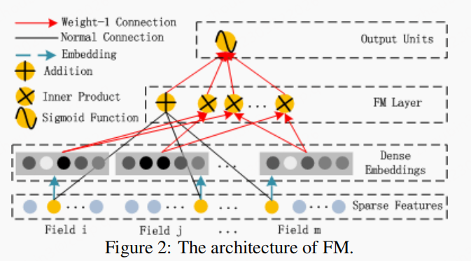
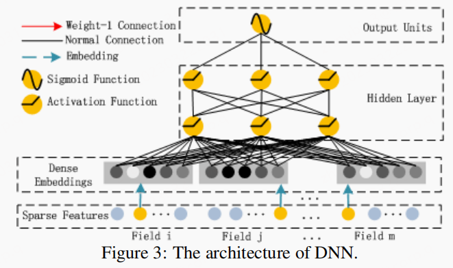
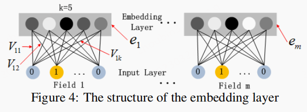
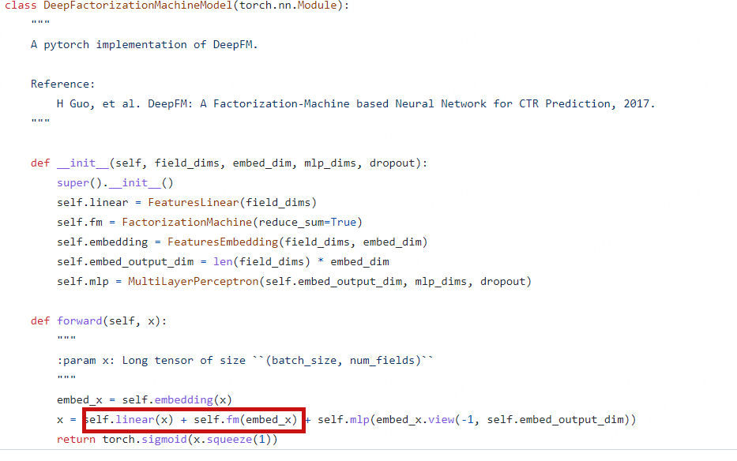

文章idea
- 文章认为
high-order交叉特征对CTR预估非常有效。但是LR需要大量的特征工程工作；CNN更加倾向于相邻特征的交互；RNN更适合处理序列化数据；FNN与PNN只捕捉了low-order交叉特征；Wide & Deep也同样需要大量特征工程。 - 为了省去特征工程的麻烦，拟合
low-order与high-order的特征，因此作者提出了DeepFM.
文章主旨
FM Component

这部分是标准的fm，具体细节不做赘述。公式如下：
DNN Component

这部分就是典型的DNN模型，具体细节不做赘述。
embedding layer

- 每个
field的长度也许不同，但是经过embedding layer映射得到的矩阵尺寸是相同的k，由上图可知，使用了sum操作。
模型试验
- 数据集:
Company∗,Criteo
具体实现
整体结构
- 后面的
DNN部分就是常规的MLP，所以不需要过多赘述。 - 图中红色方框标注出的部分即是
FM。该部分细节不需要过多赘述，详见Factorization Machines 一文。